1. Inspect the Garrison
Count the defending Guild squads and compare their power with your available attackers. An apparently weak Fort can fill quickly during preparation.
Forts turn the Realm from a solo building mode into a true Guild war. In Throne Rush, your Guild declares war, prepares for a scheduled siege, defeats player Garrison squads and Fort Guardians, and competes for bonuses that remain active for every Guild member while you control the Fort.
I am Alexandre, and I tested Fort battles during early access. In this guide I will combine the game rules with what actually happened in my first siege: how I chose a target, how quickly the enemy reinforced it, why march distance matters, and what I would do differently with my regular Guild.
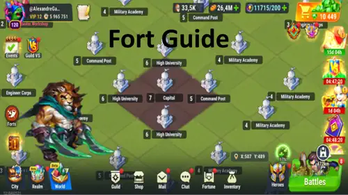
To attack or capture a Fort, the Realm must be unlocked, your Hall of Heroes must be Level 7 or higher, and you must belong to a Guild. Players without a Guild can inspect Throne Rush and view Forts on the World map, but they cannot participate in capture battles.
Forts are protected on the first day and unlock gradually on a fixed schedule. Once a Fort level unlocks, it stays available until the event ends. Some Forts also require a specific Guild Versus league, so an attractive target may remain unavailable until your Guild reaches that league.
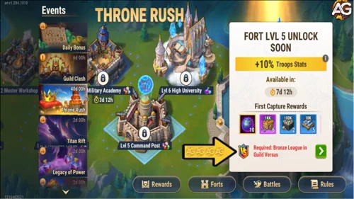
Do not declare war on the first Fort you see. The visible bonus is only one part of the decision. You need a target your Guild can reach, defeat and hold.
Count the defending Guild squads and compare their power with your available attackers. An apparently weak Fort can fill quickly during preparation.
Long marches waste battle time and lock a march queue. Move closer during the 30-minute preparation window when it is safe to do so.
Choose a bonus that helps the whole Guild. Central Forts generally offer stronger strategic value than the Level 1 Trading Posts near the outer edges.
Another Guild can attack the same Fort. Check protection, league requirements, active wars and whether a stronger rival is likely to contest it.
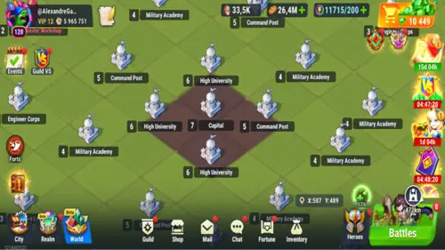
In my early-access test, I found one enemy Fort with only three Guild members defending it and chose it over a stronger alternative. That was the correct first filter, but not the end of the analysis: after the 30-minute notification window, the defenders reinforced from three squads to six. Always assume an organized Guild will react.
Open the Throne Rush Fort list, select the Ready for Capture tab, compare the available targets and press Declare War. The game then starts the 30-minute Preparation Phase and notifies Guild members. In my test, the notification also appeared on the phone's lock screen, which is extremely helpful for Guilds that do not coordinate through Discord or WhatsApp.
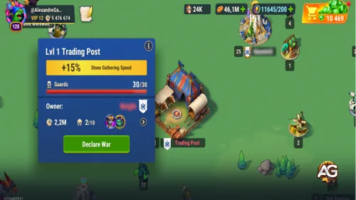
| Scope | Maximum Owned |
|---|---|
| All Forts combined | 6 |
| Level 1 | 6 |
| Level 2 | 5 |
| Level 3 | 3 |
| Each level from 4 to 7 | 1 |
If war is canceled before battle begins—manually or because another Guild captures the target first—the declaration attempt is returned. Your Guild can use it again later.
After preparation, your Guild has one hour to capture the Fort. Find the target on the World map or through Fort Battles in the Rally menu, select March, and build a squad containing a hero team and troops.
Each attacking squad fights only one Garrison squad or one Guardian per march. After the battle it returns to the player's Realm whether it wins or loses. You may attack as often as your World Energy allows, but simultaneous attacks are limited by your free march queues.
During my early-access battle, each Fort attack cost 10 World Energy. I had three free march queues, with an additional queue offered through the monthly plan. Those queues are also needed for defense, rallies, monsters and gathering, so sending everything at once can paralyze the rest of your Realm activity. Confirm the live cost on your server because early-access values may change.
Why I play and buy through the web version: purchases made through the Hero Wars Alliance web version provide bonuses like purchases made through the Hub Store, benefiting both your account and your entire Guild. If you buy through the mobile version instead, you miss these extra benefits for yourself and your Guild. When purchasing on the web, you can also use my creator code ALEXANDREGAMES to support my work at no additional cost to you.
You earn Capture Points by defeating a Guardian, defeating a Garrison squad, or dealing damage to a Garrison squad. Damage matters even if you cannot finish a defender, which lets smaller players contribute to a coordinated siege.
Several Guilds can siege the same Fort in parallel, and each can have a different start and end time. The Guild with the most Capture Points becomes the owner only if it remains eligible when the Fort falls.
Do not send marches randomly. Strong squads should remove complete defenders and Guardians; weaker squads can score through Garrison damage. Watch the Capture Rating, call targets in Guild chat, and keep enough energy for the final push instead of spending everything during the first minutes.
Open the event's Fort list, select the Captured tab, choose one of your Guild's Forts and press Garrison. A Garrison delays attackers and prevents them from reaching the permanent Guardians immediately.
Because the last arrival fights first, coordinate the order. Do not accidentally put a weak squad in front of your strongest wall unless you intentionally want it to absorb or scout the opening attack. After capturing a Fort, fill the Garrison quickly—the bonus is valuable only while your Guild can hold it.
All current Guild members receive the bonuses from every Fort the Guild owns, and bonuses from different Forts stack. Higher-level Forts are rarer and more valuable. The building names and approximate map totals below come from my early-access map and may vary after balance changes.
Bonus: +15% gathering speed for one resource: Food, Wood, Stone or Iron.
Map position: commonly found near the outer edges. Stone and Iron gathering bonuses may be especially useful when those nodes are scarce.
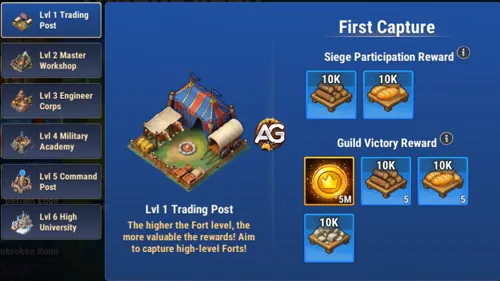
Bonus: +25% production speed for one resource: Food, Wood, Stone or Iron.
Strategy: choose the resource that is currently limiting your Guild's Realm growth.
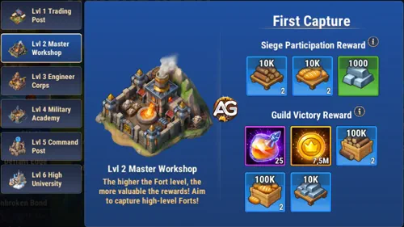
Bonus: +10% Construction Speed.
Observed map total: 12. Excellent while members are rushing important building levels.
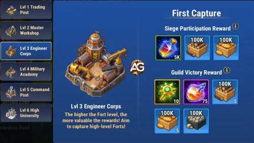
Bonus: +10% Troop Training Speed.
Observed map total: 7. Valuable for replacing siege losses and expanding every player's army.
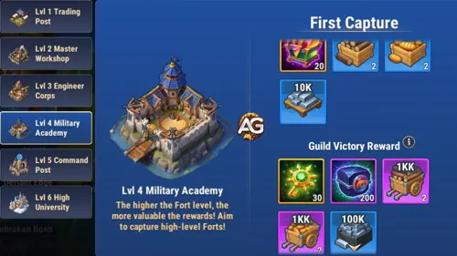
Bonus: +10% to one stat for all troops: Attack, Defense, Health or Lethality.
Observed map total: one of each variant. In my opinion, Lethality is the best offensive prize and Health is the second-best general option.
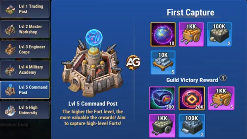
Bonus: +15% Research Speed.
Observed map total: 3. A long-term progression bonus that benefits every active researcher in the Guild.
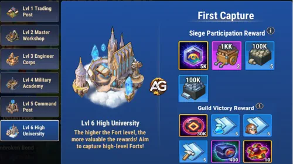
| Level | Fort | Guild-Wide Bonus | Alexandre's Use |
|---|---|---|---|
| 1 | Trading Post | +15% gathering speed for one resource | Entry Fort and resource specialization |
| 2 | Master Workshop | +25% production for one resource | Fix the Guild's biggest resource bottleneck |
| 3 | Engineer Corps | +10% Construction Speed | Fast building progression |
| 4 | Military Academy | +10% Training Speed | Recover and grow armies faster |
| 5 | Command Post | +10% Attack, Defense, Health or Lethality | Lethality first; Health second in my early-access opinion |
| 6 | High University | +15% Research Speed | Strong long-term Realm progression |
The Capital sits at the center of the Realm and is intended to be the final, highest-level objective. The planned system awards the Presidency to the Guild Master of the victorious Guild, with benefits for the President and allies. After it becomes available, its battle is expected to occur once per week for the rest of the event.
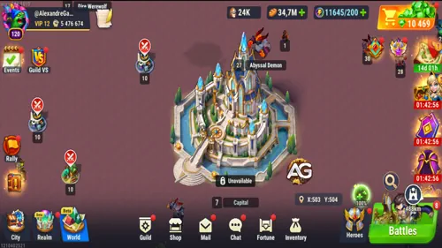
Do not build your current strategy around capturing it. The Capital is planned for a future update, so its final rules, Presidency benefits and release date can still change.
Throne Rush currently has two major reward categories:
A neutral Fort's first successful capture grants Participation Rewards to players who earned Capture Points and Victory Rewards to every member of the winning Guild.
They arrive through in-game mail, which expires after seven days.
Every current Guild member receives the Fort's active bonus for as long as the Guild controls it. Multiple owned-Fort bonuses stack within the ownership limits.
I chose a Fort with three defending players, declared war and watched the 30-minute preparation timer begin. The notification reached the Guild, including mobile lock screens. By the time battle started, the enemy had reinforced to six Garrison squads out of a possible ten—even on a weekend.
My march was slow because the target was far away. When my squad arrived, it fought an enemy hero-and-troop squad in a Realm PvP battle and won. The full replay was available only inside the battle report. After years of playing Hero Wars Alliance, watching heroes and Realm troops fight together in this new PvP format felt genuinely different.
In my early-access test, before the Battle Phase was reduced to one hour, the siege timer showed roughly one hour and 53 minutes remaining shortly after combat began. Because this was a small early-access influencer Guild, I was attacking mostly alone. A long-standing, coordinated Guild should perform much better—but only if leaders assign targets and members answer the notification.
Start with a realistic Level 1 target, but think beyond the first capture. A good Throne Rush Guild plans a route toward the Fort bonuses it values most, attacks only when members can respond, manages World Energy and march queues, and installs a coordinated Garrison immediately. Fort wars reward preparation more than individual power.
Has your Guild already captured a Fort in Throne Rush? Tell me which bonus you prioritized, how many defenders you faced and what strategy worked for your team.